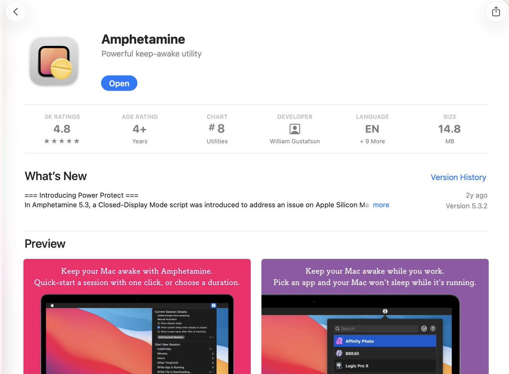

AI 日报 · 2026年5月26日
Yann LeCun：LLM 不是通往 AGI 的路，企业 AI 落地卡在"最后一公里"
图灵奖得主 Yann LeCun 离开 Meta 后首次长篇访谈，直言 LLM 范式走不到人类级智能，JEPA 世界模型才是正解。Box CEO Aaron Levie 精准诊断企业 AI 落地困局——CEO 最容易患上"AI 精神病"。YC CEO Garry Tan 断言高自主性加高品味是当下最大竞争力。开发者开始用 Claude Code 逆向工程 API，Agent 工具链正快速成熟。GitHub Trending 持续被 AI Coding Agent 基础设施占领。
世界模型
JEPA
企业 AI
AI Agent
知识图谱
LLM 范式
今日头条
Yann LeCun 离开 Meta 后首次长篇访谈：LLM 不是通往人类级智能的路径——图灵奖得主在 Unsupervised Learning 播客中系统阐述了他的判断：LLM 在离散符号领域表现出色，但现实世界是连续、高维、充满噪声的，需要完全不同的架构。他创立的 Ami Labs 聚焦 JEPA 架构的世界模型，核心论点：VLA 已被业界视为失败方向，生成式世界模型（预测像素）是死胡同，JEPA 在抽象表征空间做预测才是正解。最新论文 SIGREG 提供了对抗表征坍缩的有希望方案。
企业 AI 落地困局：CEO 的"AI 精神病"与表演型 Demo——Box CEO Aaron Levie 精准诊断：CEO 离实际落地的最后一公里太远，看到 happy path 就觉得 AGI 已到，却忽略代码审查、合同校验、数据对接等现实中必须解决的 20 件事。Google 产品负责人 Madhu Guru 呼应：CEO 的 AI FOMO 催生模糊指令，员工用表演型 Demo 应付交差，两年过去毫无实质进展，而亲力亲为的创业公司已在颠覆他们。
企业 AI
Box CEO Aaron Levie：CEO 最容易患上"AI 精神病"
Aaron Levie 给出了一个精准的企业 AI 诊断：CEO 是高危人群——他们离实际落地的最后一公里太远，看到 happy path 就觉得 AGI 已到，却忽略了代码审查、合同校验、数据对接等现实中必须解决的 20 件事。他的建议：CEO 要大量亲自使用 AI，只有亲手操作才能同时看清 AI 的上限和真实工作量。这个诊断直指企业 AI 落地的核心病灶——决策者与执行层之间存在巨大的感知鸿沟。
"CEOs are the most susceptible to AI psychosis. They're farthest from the last mile of actual execution — they see the happy path and think AGI is here, ignoring the 20 things that need to actually work in reality."
企业 AI
Google PM Madhu Guru：表演型 Demo 正在杀死企业 AI 转型
Google Gemini/Veo 产品负责人 Madhu Guru 呼应了 Levie 的诊断，从另一个角度揭示问题：CEO 们的 AI FOMO 催生了模糊的 AI 指令，员工则交出表演型 Demo 应付交差，两年过去毫无实质进展。而另一边，亲力亲为的创业公司已经在颠覆他们。这形成了一个讽刺的局面：资源最多的大公司在 AI 转型中最慢，因为它们缺少的不是技术，而是从上到下的真实理解和执行力。
代码进化
Anthropic 工程师 Thariq：遗留代码库将成为"蒸馏"新代码的宝贵原料
Anthropic Claude Code 团队成员 Thariq 在 Bun 重写事件的讨论中提炼出一个深刻洞察：遗留代码库将成为"蒸馏"新代码的宝贵原料——每款游戏应该跨平台、所有遗留软件应该 Web 化、不再需要 COBOL。"模型目前还不太行，但它们会到的。"这个视角将遗留代码从"技术债"重新定义为"训练数据"，暗示 AI 将彻底改变我们对待老旧系统的态度。
"Legacy codebases will become valuable feedstock for 'distilling' into newer forms. Every game should be cross-platform, every legacy app should be webified, no more COBOL."
创业哲学
YC CEO Garry Tan：高自主性 + 高品味 = 当下最大竞争力
Garry Tan 言简意赅的洞察：高自主性（high agency）加高品味（high taste）是当下最大的竞争力组合。在 AI 工具极大降低执行门槛的时代，能主动发起行动的人和不满足于平庸结果的人将获得指数级优势。"当你的所有朋友都在边界上建造东西时，我老实说正在度过人生最快乐的时光。"这句话捕捉了 AI 时代创业者的核心心态——边界正在快速扩展，而建造者正在享受前所未有的创造自由。
"High agency + high taste. When all your friends are building things at the frontier, I'm honestly having the time of my life."
AGI 辩论
VC Matt Turck：AGI 的瓶颈可能不在模型，而在工程整合
Matt Turck 引用 OpenAI 的 Yann Dubois 最新访谈中的一句话："如果我们冻结现有模型，专心打磨 harness 并多花时间用它训练，人们会在每个领域都感受到 AGI。"这与 LeCun 的判断形成尖锐对比——一方说现有模型加工程就够，另一方说 LLM 永远到不了 AGI。两种观点背后是对"智能"定义的完全不同理解：是工具层面的实用性，还是认知层面的通用性？
"If we froze current models, focused on the harness, and spent more time training with it, people would feel AGI in every domain." — Yann Dubois, OpenAI
开发实践
VC Nikunj Kothari：用 Claude Code 逆向工程网站 API
Nikunj Kothari 分享了一个实操性极强的技巧：用 Claude Code 逆向工程网站 API——通过抓取网络请求、识别 cookie auth、试错找出 rate limit，可以快速构建编程化数据管道。他进一步预测：每个网站很快都需要 headless 化，未来还需要 tools.txt 让 AI agent 知道可调用哪些工具。这个预测暗示 Web 将从"为人设计"转向"为 agent 设计"，将催生一套全新的 Web 标准。
创业实践
Roblox PM Peter Yang：用 AI Agent 单人运营创业公司
Peter Yang 采访了用 AI Agent 单人运营创业公司的 Ryan Carson，提炼出核心转变："我们现在不应该说'先做 MVP'，而应该说'先做能造 MVP 的系统'。" Ryan 用 OpenClaw 当 AI 幕僚长、Codex 和 Devin 当工程团队，把 Agent 当真正员工对待——给它们邮箱、日历、GitHub 账号。这标志着创业的方法论正在从"先做产品"升级为"先建能持续产出产品的 AI 系统"。
"We shouldn't say 'build an MVP first' anymore. We should say 'build the system that builds MVPs first'." — Ryan Carson
品牌哲学
Vercel CEO Guillermo Rauch：打造伟大品牌的最好方式是打造伟大产品
Guillermo Rauch 的极简品牌哲学只用了一句话："如何打造伟大品牌？打造伟大产品。"在 AI 工具让产品开发门槛急剧降低的时代，这一定律比以往任何时候都更重要——当任何人都能快速做出产品时，真正能区分品牌的只有产品的内在质量。Rauch 顺便透露他最近迷上了巴西柔术，从另一个角度诠释了"把一件事做到极致"的哲学。
工具分享
Zara Zhang：Mac 神器 Amphetamine + EM 转 IC 的趋势 + Codex 开源发现
Zara Zhang 分享了三个洞察：① Mac 上 Amphetamine 比 caffeinate 命令更可靠地保持合盖不休眠；② 越来越多的工程经理自愿转回 IC 角色，因为终于能重新动手造东西了——AI 工具让个人产出大幅提升，管理工作的相对价值正在下降；③ 她发现 Codex 是开源的。三条看似无关的观察共同指向一个趋势：AI 时代个人创作者的力量正在回归。

播客深度
Unsupervised Learning Ep 86：Yann LeCun 离开 Meta 后首次长篇访谈
图灵奖得主 Yann LeCun 在离开 Meta 创立 Ami Labs 后，首次在 Unsupervised Learning 播客中系统阐述了他对 AI 未来的判断。核心论点：LLM 不是通往人类级智能的路径——它们在语言等离散符号领域表现出色，但现实世界是连续的、高维的、充满噪声的，需要完全不同的架构。
VLA 已被业界视为失败方向
Vision Language Action 模型不够可靠，需要太多训练数据。LeCun 认为这条路走不通，需要从架构层面重新思考。
两种世界模型路线：生成式 vs JEPA
生成式世界模型（预测像素）是死胡同——在像素空间做预测浪费太多算力。JEPA 在抽象表征空间做预测，更像人类感知世界的方式。
真正的智能需要三个要素
预测行动后果的能力 + 通过搜索与优化的规划能力 + 在抽象层面而非像素层面建模。缺少任何一个要素，都无法构建真正的智能体。
表征坍缩与 SIGREG 方案
JEPA 的核心挑战是表征坍缩——模型学会把所有输入映射到同一个常数表征，从而"作弊"式地让预测误差为零。最新论文 SIGREG（sketch isotropic Gaussian regularization）提供了一个有希望的解决方案。
推荐论文：Le World Model
LeCun 与 Randall Balestriero 合作的论文，系统阐述了 JEPA 世界模型的理论框架。如果你关心 AI 的下一个范式，这是必读。
GitHub Trending · 5月26日
AI Coding Agent 基础设施持续爆发——知识图谱、插件生态、技能配置全面开花
Lum1104/Understand-Anything ⭐ 5,604 · TypeScript
将任何代码转化为可探索、可搜索、可提问的交互式知识图谱。支持 Claude Code、Codex、Cursor、Copilot、Gemini CLI。
colbymchenry/codegraph ⭐ 3,161 · TypeScript
预索引的代码知识图谱，专为 Claude Code、Codex、Cursor、OpenCode、Hermes Agent 优化——更少 token、更少工具调用、100% 本地运行。
multica-ai/andrej-karpathy-skills ⭐ 2,749
源自 Karpathy 对 LLM 编码常见陷阱的观察，一个单独的 CLAUDE.md 文件用于改善 Claude Code 行为。
anthropics/knowledge-work-plugins ⭐ 1,441 · Python
Anthropic 官方开源的知识工作者插件库，用于 Claude Cowork——将插件生态从编程扩展到通用知识工作。
garrytan/gstack ⭐ 640 · TypeScript
YC CEO Garry Tan 的真实 Claude Code 配置：23 个 opinionated 工具，覆盖 CEO、设计师、工程经理、发布经理、文档工程师、QA 等角色。
manaflow-ai/cmux ⭐ 603 · Swift
基于 Ghostty 的 macOS 终端，带垂直标签页和 AI 编程 agent 通知——专用终端工具开始出现。
hardikpandya/stop-slop ⭐ 345
一个去除 AI 写作痕迹的 skill 文件——从文本中剥离那些"AI tells"，让 AI 生成的内容更自然。
shiyu-coder/Kronos ⭐ 245 · Python
金融市场语言的基础模型——用 AI 理解金融数据。
Axorax/awesome-free-apps ⭐ 192 · JavaScript
最佳免费 PC 和移动应用精选列表。
paperless-ngx/paperless-ngx ⭐ 176 · Python
社区驱动的文档管理系统：扫描、索引、归档所有物理文档。
anthropics/claude-cookbooks ⭐ 141 · Jupyter Notebook
Anthropic 官方 Claude 使用技巧合集（notebooks/recipes）。
moeru-ai/airi ⭐ 62 · TypeScript
自托管的 Grok 伴侣容器，支持实时语音、Minecraft、Factorio，跨 Web/macOS/Windows。
趋势观察：今天的 GitHub Trending 延续了 AI Coding Agent 基础设施的主题。知识图谱（Understand-Anything 飙升至 5,604 星、Codegraph 3,161 星）继续霸榜前两名，技能配置（Karpathy skills、gstack）展示了开发者如何"调教"自己的 AI agent，插件生态（Anthropic 知识工作插件）从编程向通用知识工作扩展。一个有趣的新信号是 stop-slop——开发者开始关心如何让 AI 的输出不那么"AI 味"，这标志着 AI 写作工具从"能不能写"进化到了"写得好不好"的阶段。
今日思考
LeCun vs OpenAI：AGI 定义的根本分歧
LeCun 说 LLM 不是通往 AGI 的路，需要全新的 JEPA 架构；OpenAI 的人说冻结现有模型加工程就够了。这不是技术路线之争，而是对"智能"的定义完全不同：是认知层面的通用理解能力，还是工具层面的实用有效性？如果你相信 AGI 意味着真正理解世界，那 LeCun 是对的；如果你相信 AGI 意味着在所有领域提供超人类水平的工具辅助，那 Dubois 是对的。两种定义将导向完全不同的 AI 发展路径。
企业 AI 的"最后一公里"鸿沟
Aaron Levie 的诊断切中要害：CEO 离落地太远，看到 happy path 就宣布胜利；员工用表演型 Demo 应付模糊指令。问题不在技术能力，而在组织内部对 AI 的真实理解存在断层。当决策者不亲手用 AI、执行者没有清晰的 AI 战略时，两年的"AI 转型"可以毫无实质进展。而亲力亲为的创业公司正在这个空隙中崛起——它们没有组织惯性的包袱，从头就用 AI 原生方式工作。
遗留代码的新价值：从技术债到训练数据
Thariq 的洞察重新定义了遗留代码的意义——它们不再是需要维护的负担，而是"蒸馏"新代码的原料。当 AI 能够理解并重写老旧系统时，每行 COBOL 代码都变成了有价值的训练数据。这不仅是技术变革，更是对软件资产价值的根本重估：你维护了 20 年的遗留系统，可能突然变成了最珍贵的 AI 训练语料。
从"造 MVP"到"造能造 MVP 的系统"
Ryan Carson 的方法论升级揭示了 AI 时代创业的本质变化：目标不是做产品，而是做能持续产出产品的系统。把 AI Agent 当真正员工对待——给它们邮箱、日历、GitHub 账号——这不再是科幻，而是正在发生的现实。当一个人加一套 AI Agent 系统就能运营一家创业公司时，"团队规模"作为竞争力指标的意义将被彻底改写。
今日一问：LeCun 和 OpenAI 的 Dubois 给出了两种完全不同的 AGI 判断——一个说 LLM 永远到不了，一个说现有模型加工程就够了。如果你正在构建 AI 产品或制定 AI 战略，你选择相信哪一种判断？你的产品路线图会因此有什么不同？
来源：Unsupervised Learning 播客、X/Twitter、GitHub Trending。AI 日报每日更新。